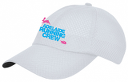
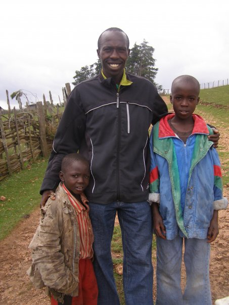
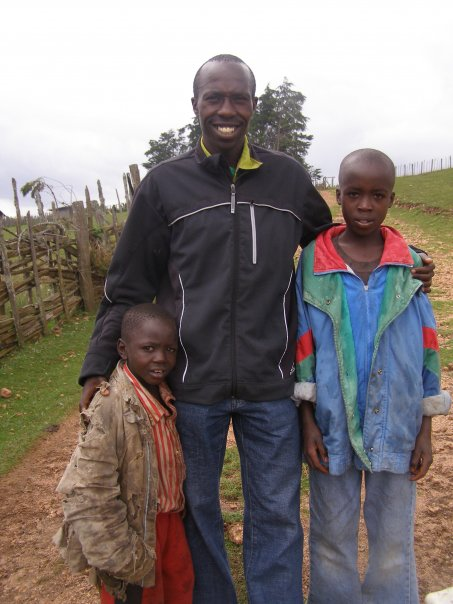

We are a social Adelaide running group running in and around the CBD

The Adelaide Running Crew is a social running group aimed at helping members achieve their running goals.
We do this through group training sessions conducted in a supportive atmosphere. All members of our group have different running goals and abilities - from purely social runners right through to those training for half and full marathons.
It's all about running together, having fun and celebrating each others achievements. It's free to join and train with us.
Sessions do change so check facebook/twitter/google+ accounts for the latest information. To see the full year training plan
click here
Members Info
Loading ...
...show more sessions...
Meet at 6pm for a 6:10pm start.
Meet at the start of Uni Loop, crn of Jerningham St and Mackinnon Pde in Nth Adelaide.
click for map
...more info...
Loading ...
...show more sessions...
Meet at 8am for a 8:10am start.
Saturday morning runs start all over Adelaide, check the above upcoming session, training plan, facebook or twitter
for the latest information.
...more info...
Loading ...
...show more races...
While races are not organised by the Adelaide Running Crew. More often than not someone in our group participates in most races.
In South Australia most races are organised by SARRC or Trail Running SA, check their websites for more details.


All Adelaide Running Crew merchandise can now be purchased directly through Adelaide ES&S Printers via an online store accessed at:

The online store only accepts Mastercard & Visa and purchases may be either picked up at ES&S (749 Port Road,
Woodville) or delivered via post.
For any issues purchasing merchandise via the online store, please contact Adelaide ES&S Printers direct on
(08) 8345 3033.


How can you help?
The Adelaide Running Crew choose a charity to donate to each year. We encourage each runner to donate either through a ‘gold coin’ donation after any of our runs or by directly depositing any amount in the ARC bank account.
2012/2013/2014/2015
Since 2012, the Adelaide Running Crew have continued to collect donations for the Hutt Street Centre. The Hutt Street Centre is a multi-service day centre giving a safe haven for Adelaide’s most vulnerable men and women. Homelessness can and does happen to anyone. Hutt St Centre is a place of hope and opportunity, helping people facing homelessness to rebuild their lives, without judgement.
...more info...
Organisations we supported in the past
 

The best place to find us is to turn up to one of our training sessions, however you can also find us on social media and email.


...Contact Form...